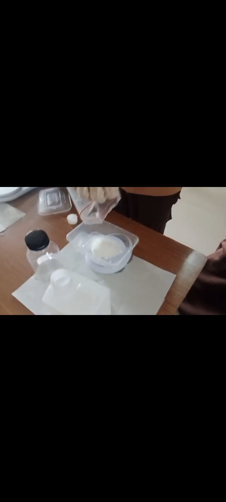
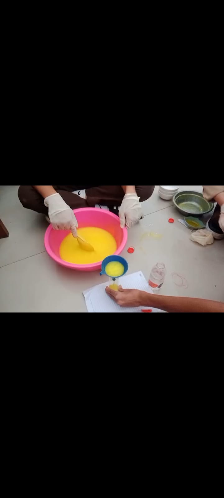

Dokumentasi
Saat Pengambilan Bahan-bahan

Proses Pembuatan Sabun

Hasilnya

Kelompok 5


Pembuatan sabun adalah proses kimia antara lemak/minyak dengan basa kuat (NaOH/KOH).
Pembuatan sabun dengan "texapon" lebih menekankan pada manipulasi fisik (pengentalan dengan garam) dibandingkan dengan saponifikasi minyak. Hasilnya adalah pembersih yang efektif, ekonomis, dan stabil.